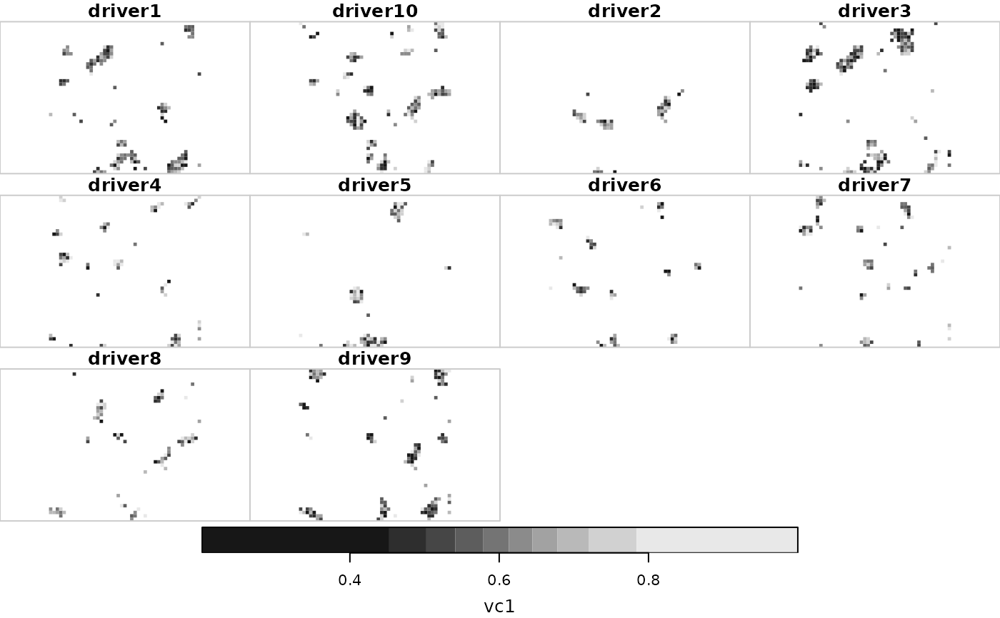
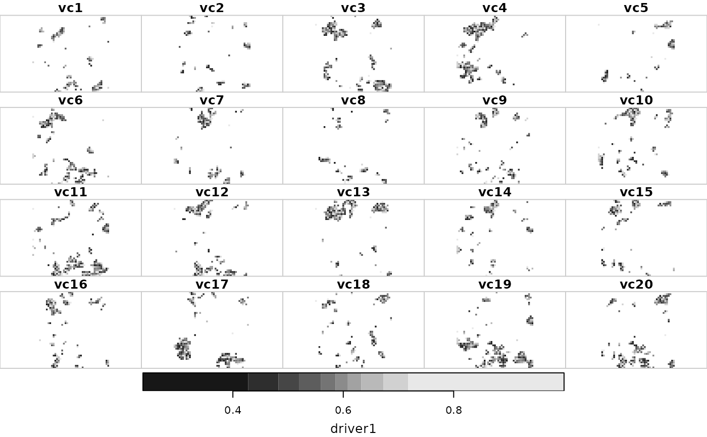

Cumulative exposure assessment
exposure.RdAssessment of the exposure (i.e. overlap) between valued components and environmental drivers in the context of cumulative effects assessments
Usage
exposure(drivers, vc, exportAs = c("list", "stars"))Arguments
- drivers
distribution and intensity of environmental drivers as stars object
- vc
distribution of valued components as stars object
- exportAs
string, the type of object that should be created, either a "list" or a "stars" object
Examples
# Data
drivers <- rcea:::drivers
vc <- rcea:::vc
# Exposure
(expo <- exposure(drivers, vc, "stars"))
#> stars object with 3 dimensions and 20 attributes
#> attribute(s):
#> Min. 1st Qu. Median Mean 3rd Qu. Max. NA's
#> vc1 0.2021352 0.5213672 0.6129986 0.6136429 0.6940780 1 19256
#> vc2 0.2616746 0.5185849 0.6117746 0.6113144 0.6938048 1 19357
#> vc3 0.2375020 0.5226039 0.6082802 0.6068182 0.6858955 1 18655
#> vc4 0.1941005 0.5288972 0.6139892 0.6120621 0.6893543 1 18527
#> vc5 0.2452544 0.5281468 0.6097971 0.6143875 0.6969998 1 18953
#> vc6 0.2759878 0.5257590 0.6054765 0.6076875 0.6823719 1 18680
#> vc7 0.2009212 0.5297309 0.6149135 0.6118864 0.6935994 1 18948
#> vc8 0.1941005 0.5242333 0.6048160 0.6104447 0.6839465 1 19468
#> vc9 0.1638378 0.5231641 0.6097690 0.6108584 0.6938352 1 18613
#> vc10 0.1941005 0.5304054 0.6133002 0.6136116 0.6962600 1 18404
#> vc11 0.1638378 0.5282763 0.6140082 0.6122241 0.6929783 1 17697
#> vc12 0.2445233 0.5222109 0.6105871 0.6082432 0.6923947 1 18929
#> vc13 0.1941005 0.5225111 0.6105436 0.6091227 0.6927667 1 18840
#> vc14 0.2009212 0.5283231 0.6117160 0.6095563 0.6944252 1 18938
#> vc15 0.1941005 0.5204771 0.6076877 0.6033786 0.6835737 1 19300
#> vc16 0.1941005 0.5294499 0.6185720 0.6143025 0.6923047 1 18759
#> vc17 0.2021352 0.5241139 0.6077421 0.6083483 0.6912994 1 18601
#> vc18 0.1638378 0.5280775 0.6140542 0.6131161 0.6939189 1 18169
#> vc19 0.2061731 0.5285207 0.6117942 0.6121077 0.6909626 1 17974
#> vc20 0.1941005 0.5237485 0.6129409 0.6121863 0.6953557 1 18437
#> dimension(s):
#> from to offset delta values x/y
#> x 1 45 -100 5 NULL [x]
#> y 1 45 125 -5 NULL [y]
#> drivers 1 10 NA NA driver1,...,driver9
plot(expo)

expo <- merge(expo, name = "vc") |>
split("drivers")
plot(expo)
